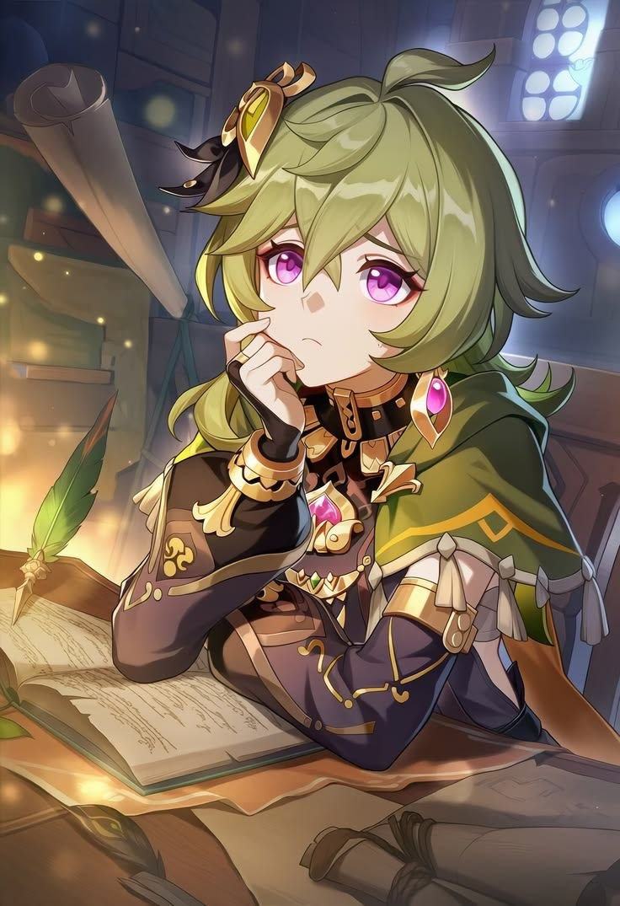
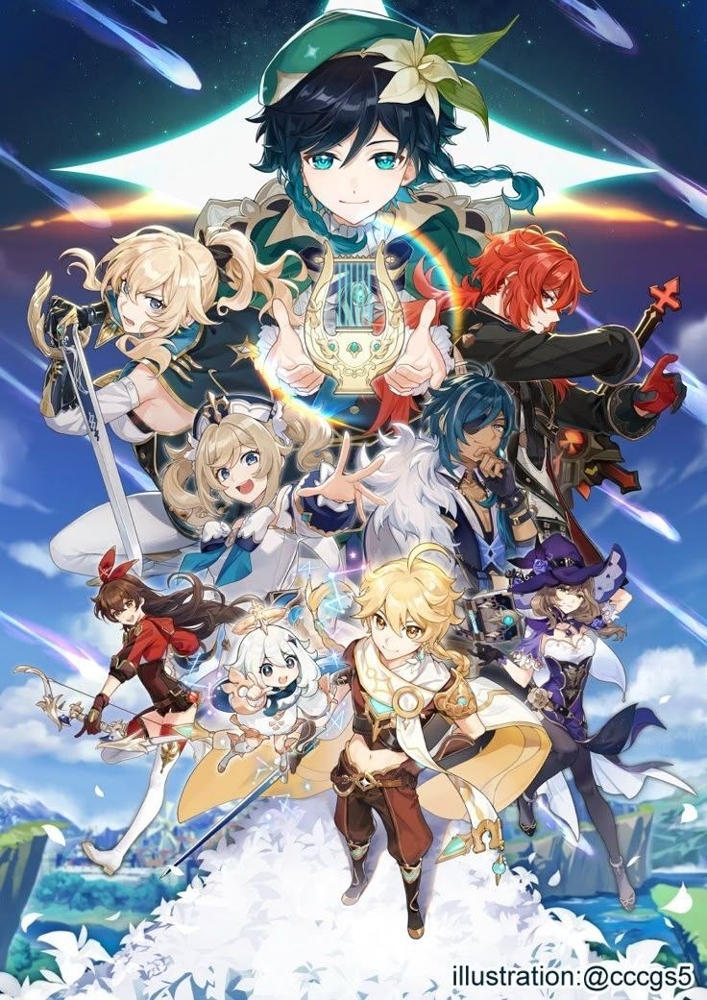
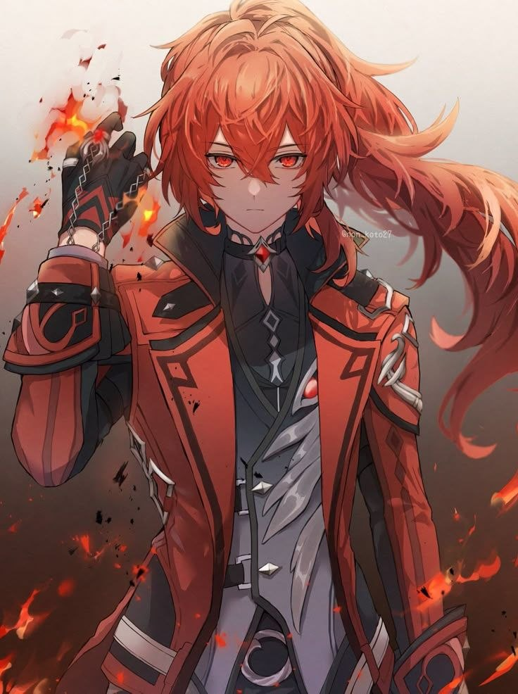

Манґа по «Genshin Impact» найбільше сподобалася мені саме через персонажів і те, як вона розкриває їх глибше, ніж це показано в самій грі. Особливо цікаво було спостерігати за Коллеї — її історія реально вибиває з легкого пригодницького настрою і додає темряви. Те, через що вона пройшла, робить її персонажем із травмами і внутрішньою боротьбою.
Також дуже сподобалося, як показали Ділюка і Кейю. У грі їхні стосунки відчуваються напруженими, але манґа дає більше контексту і показує, звідки це все пішло. Бачити їх у більш молодому віці — це додає емоцій і робить їх конфлікт зрозумілим, а не просто «вони не ладнають».
Загалом, манґа по Genshin Impact відчувається як більш темна і серйозна сторона цього світу. Вона показує, що за яскравими містами і пригодами стоять жорстокі експерименти, втрати і складні рішення. І саме це мені найбільше зайшло — відчуття, що цей світ не такий вже й казковий, як може здатися спочатку.


